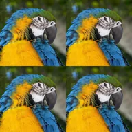

Tile

Inuulit ang larawan sa isang grid.
Mga Setting
| Setting | Uri | Saklaw | Default |
|---|---|---|---|
| Iskala | Numero | 0.02 hanggang 1 | 0.5 |
| Offset | Punto (X, Y) | -1 hanggang 2 | 0, 0 |
| Salamin | Naka-on o naka-off | – | Naka-off |

Inuulit ang larawan sa isang grid.
| Setting | Uri | Saklaw | Default |
|---|---|---|---|
| Iskala | Numero | 0.02 hanggang 1 | 0.5 |
| Offset | Punto (X, Y) | -1 hanggang 2 | 0, 0 |
| Salamin | Naka-on o naka-off | – | Naka-off |